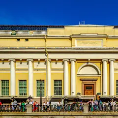
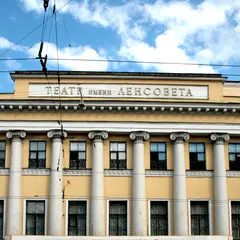
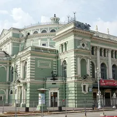
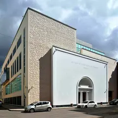
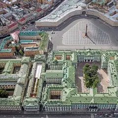

Подборку собрали 18 ноября, прошедшие события скрыты. Свежая афиша — на главной
Афиша на среду, 18 ноября
Куда сходить сегодня в Петербурге
Среда, 18 ноября. Сегодня в нашей афише 21 событие, среди них 15 выставок, 5 спектаклей и 1 вечер стендапа. На выходных, 21–22 ноября, — ещё 7 событий. Если не хочется покупать билеты, у нас 155 готовых планов на вечер: место, ужин рядом и маршрут.
- сегодня: 21 событие
- выходные: 7 событий
- 155 планов
Сегодня, 18 ноября 21
Лахта Центр · м. Беговая · бесплатно
Восемь световых и звуковых скульптур, которые отзываются на касание и ветер и превращают научные данные в музыку. Вход без билета.
Подробнее: Третья природаПозвать сюда: Третья природаБилеты : Третья природа (страница с билетами, откроется в новой вкладке)
Фото: TomPlay148, CC BY-SA 3.0 · Wikimedia Commons
Commode · м. Маяковская · 390–1 990 ₽ · 18+
У микрофона только девушки-комики из Петербурга и Москвы: про бывших, свидания и всё наболевшее. Идёт почти каждый вечер на Невском — готовый план для девичника.
Подробнее: Стендап по-женскиПозвать сюда: Стендап по-женскиБилеты : Стендап по-женски (страница с билетами, откроется в новой вкладке)

Корпус Бенуа Русского музея · м. Невский проспект · от 800 ₽
Большая юбилейная выставка Айвазовского, включая самые известные морские полотна; красивый маршрут для свидания.
Подробнее: АйвазовскийПозвать сюда: АйвазовскийБилеты : Айвазовский (страница с билетами, откроется в новой вкладке)
Фото: Никонико962, CC BY-SA 4.0 · Wikimedia Commons
Корпус Бенуа Русского музея · м. Невский проспект · от 800 ₽
Крупная ретроспектива мариниста: около двухсот работ, отреставрированный «Девятый вал», модели кораблей и мультимедийный зал. Спокойный повод для свидания.
Подробнее: АйвазовскийПозвать сюда: АйвазовскийБилеты : Айвазовский (страница с билетами, откроется в новой вкладке)
Фото: Никонико962, CC BY-SA 4.0 · Wikimedia Commons
Музей «Эрарта» · м. Горный институт · 1 500–2 950 ₽
Итальянский фэшн-фотограф, четверть века работавший с Vogue Italia: портреты звёзд, моделей и дизайнеров эпохи большой моды. Легко и красиво смотреть с подругами.
Подробнее: Бардо Фабиани. Память о прекрасном прошломПозвать сюда: Бардо Фабиани. Память о прекрасном прошломБилеты : Бардо Фабиани. Память о прекрасном прошлом (страница с билетами, откроется в новой вкладке)
Фото: Erarta, CC BY 3.0 · Wikimedia Commons
Мариинский-2 · м. Садовая · 1 100–8 000 ₽ · 12+
Свежая премьера Мариинского-2: большая героическая опера Россини о швейцарском стрелке, по-французски с русскими титрами. 17 октября в 12:00 и 19:00, в ноябре — в 18:00.
Подробнее: Вильгельм ТелльПозвать сюда: Вильгельм ТелльБилеты : Вильгельм Телль (страница с билетами, откроется в новой вкладке)
Фото: randreu, CC BY 3.0 · Wikimedia Commons
Иммерсивный театр «Морфеус» · м. Адмиралтейская · 3 000–3 500 ₽ · 18+
Иммерсивная комедия-расследование: после бурного девичника вы просыпаетесь в разгромленном номере, а невеста исчезла. Группа 2–8 человек, сеансы с 13:00 до 21:30.
Подробнее: До свадьбы доживётПозвать сюда: До свадьбы доживётБилеты : До свадьбы доживёт (страница с билетами, откроется в новой вкладке)
Музей ОБЭРИУ · м. Горьковская · от 950 ₽
Новая экспозиция в бывшей квартире Введенского о женщинах круга обэриутов: художницах, музах и хранительницах архивов.
Подробнее: Дочь дочери дочерей дочериПозвать сюда: Дочь дочери дочерей дочериБилеты : Дочь дочери дочерей дочери (страница с билетами, откроется в новой вкладке)
Музей ОБЭРИУ · м. Горьковская · от 950 ₽
Выставка о художницах и хранительницах наследия обэриутов — Алисе Порет, Вере Ермолаевой, Татьяне Глебовой: живопись, графика, письма и архив.
Подробнее: Женщины круга ОБЭРИУ. «Дочь дочери дочерей дочери»Позвать сюда: Женщины круга ОБЭРИУ. «Дочь дочери дочерей дочери»Билеты : Женщины круга ОБЭРИУ. «Дочь дочери дочерей дочери» (страница с билетами, откроется в новой вкладке)
Эрмитаж, Главный музейный комплекс · м. Адмиралтейская
Шёлковые придворные халаты, портреты цинских полководцев и воссозданный кабинет китайского учёного в Гербовом зале. Выставка работает до 22 ноября — успейте.
Подробнее: Императорский Китай. Династия Цин (1644–1911)Позвать сюда: Императорский Китай. Династия Цин (1644–1911)Билеты : Императорский Китай. Династия Цин (1644–1911) (страница с билетами, откроется в новой вкладке)
Фото: Teddy fox78, CC BY-SA 3.0 · Wikimedia Commons
Эрмитаж, Главный музейный комплекс · м. Адмиралтейская
Эскизы, по которым швейцарские мастера собирали цветные окна для ратуш и домов. Тонкая графика в небольшой галерее — приятная пауза после парадных залов.
Подробнее: Линии света. Швейцарские рисунки для витражей XVI–XVII вековПозвать сюда: Линии света. Швейцарские рисунки для витражей XVI–XVII вековБилеты : Линии света. Швейцарские рисунки для витражей XVI–XVII веков (страница с билетами, откроется в новой вкладке)
Фото: Teddy fox78, CC BY-SA 3.0 · Wikimedia Commons
Цифергауз · м. Горный институт · бесплатно · 16+
Бесплатная выставка о связях природы, человека и технологий: художники исследуют, как камера, алгоритмы и память складывают картину мира. Тихий формат для свидания.
Подробнее: Пока собирается мирПозвать сюда: Пока собирается мирБилеты : Пока собирается мир (страница с билетами, откроется в новой вкладке)

Театр им. Ленсовета, Малая сцена · м. Достоевская · 4 000–5 000 ₽ · 16+
Лирическая комедия Александра Галина: родные устраивают вдовцу-пенсионеру смотрины с тремя колоритными невестами. Камерная Малая сцена, начало в 19:00 или 19:30.
Подробнее: РетроПозвать сюда: РетроБилеты : Ретро (страница с билетами, откроется в новой вкладке)
Фото: Дарья Пичугина, CC BY-SA 2.5 · Wikimedia Commons
РОСФОТО · м. Адмиралтейская · 0+
Нижний Новгород 1896-го на старинных снимках: павильоны большой Всероссийской выставки, электрическая дорога и воздухоплавательный парк. Тихий музей рядом с Исаакием.
Подробнее: Россия 1896. К юбилею Нижегородской промышленной и художественной выставкиПозвать сюда: Россия 1896. К юбилею Нижегородской промышленной и художественной выставкиБилеты : Россия 1896. К юбилею Нижегородской промышленной и художественной выставки (страница с билетами, откроется в новой вкладке)
Эрмитаж, Главный штаб · м. Адмиралтейская
Полузабытый художник, проживший жизнь между Россией и Францией: картины из частного фонда в залах Главного штаба. Удобно совместить с импрессионистами в том же здании.
Подробнее: Русский парижанин Константин КузнецовПозвать сюда: Русский парижанин Константин КузнецовБилеты : Русский парижанин Константин Кузнецов (страница с билетами, откроется в новой вкладке)
Фото: Max A. Khlopov, CC BY-SA 3.0 · Wikimedia Commons
Иммерсивный театр «Морфеус» · м. Адмиралтейская · от 4 500 ₽ · 18+
Иммерсивный тру-крайм: вы присяжные, изучаете улики по делу о пропавшем подростке и решаете судьбу подозреваемого. Группа 6–14 человек, начало в 18:00–19:45.
Подробнее: Судный деньПозвать сюда: Судный деньБилеты : Судный день (страница с билетами, откроется в новой вкладке)
Манеж · м. Адмиралтейская · 100–800 ₽ · 12+
Тысяча с лишним экспонатов из 98 собраний страны: шаляпинский наряд царя Бориса, кусок занавеса Боровского с таганковского «Гамлета» и головинский занавес «Маскарада».
Подробнее: Сцена действияПозвать сюда: Сцена действияБилеты : Сцена действия (страница с билетами, откроется в новой вкладке)
Фото: SERGiK73, CC BY-SA 3.0 · Wikimedia Commons
Лахта Центр · м. Беговая · бесплатно · 6+
Восемь интерактивных арт-объектов из света и звука откликаются на касания и движение воздуха; один превращает городскую погоду в музыку.
Подробнее: Третья природаПозвать сюда: Третья природаБилеты : Третья природа (страница с билетами, откроется в новой вкладке)
Фото: TomPlay148, CC BY-SA 3.0 · Wikimedia Commons
БДТ им. Товстоногова, Малая сцена · м. Сенная площадь · от 1 000 ₽ · 18+
Пьеса Кокто о последнем телефонном разговоре с ушедшим любимым звучит почти как камерная опера: актриса и рояль. 1,5 часа без антракта; 27 декабря начало в 18:00.
Подробнее: Человеческий голосПозвать сюда: Человеческий голосБилеты : Человеческий голос (страница с билетами, откроется в новой вкладке)
Фото: GAlexandrova, CC BY-SA 4.0 · Wikimedia Commons
Музей «Эрарта» · м. Горный институт · 1 500–2 950 ₽
Кастомные «харлеи», архивные фото и истории владельцев: каждый байк тут — портрет хозяина. Отличный повод привести в музей тех, кто в музеи обычно не ходит.
Подробнее: Harley-Davidson. Дух свободыПозвать сюда: Harley-Davidson. Дух свободыБилеты : Harley-Davidson. Дух свободы (страница с билетами, откроется в новой вкладке)
Фото: Erarta, CC BY 3.0 · Wikimedia Commons
Эрмитаж, Главный музейный комплекс · м. Адмиралтейская
Главная выставка сезона в Эрмитаже: античная скульптура и барочные образы Вечного города сведены в одну большую прогулку по Риму. Закладывайте пару часов.
Подробнее: Urbi et Orbi. Рим барочный и Рим античныйПозвать сюда: Urbi et Orbi. Рим барочный и Рим античныйБилеты : Urbi et Orbi. Рим барочный и Рим античный (страница с билетами, откроется в новой вкладке)
Фото: Teddy fox78, CC BY-SA 3.0 · Wikimedia Commons


На выходных, 21–22 ноября 7
Александринский театр · м. Гостиный двор · 500–12 000 ₽ · 18+
Новый «Ревизор» Валерия Фокина на сцене, где гоголевскую комедию впервые сыграли в 1836 году. Большой вечер — около 3 ч 20 мин, начало в 18:00.
Подробнее: Ревизор с продолжениемПозвать сюда: Ревизор с продолжениемБилеты : Ревизор с продолжением (страница с билетами, откроется в новой вкладке)
Фото: Bene Riobó, CC BY-SA 4.0 · Wikimedia Commons
КЦ Троицкий · м. Пролетарская · бесплатно
Бесплатный спектакль по Шекспиру и повестям Пушкина: сцены из «Ромео и Джульетты» и «Барышни-крестьянки».
Подробнее: Джульетта. Сцены из трагедии. Уездные барышни. Сцены из сельской жизниПозвать сюда: Джульетта. Сцены из трагедии. Уездные барышни. Сцены из сельской жизниБилеты : Джульетта. Сцены из трагедии. Уездные барышни. Сцены из сельской жизни (страница с билетами, откроется в новой вкладке)
Замок на Невском · м. Маяковская · от 1 600 ₽ · 12+
Иммерсивное мистическое шоу: герои «Шинели», «Носа» и «Вия» в одном сюжете, а зритель может вмешаться в ход действия. По пятницам и субботам в 19:00, недорого.
Подробнее: Петербург ГоголяПозвать сюда: Петербург ГоголяБилеты : Петербург Гоголя (страница с билетами, откроется в новой вкладке)

Мариинский театр · м. Садовая · 3 750–14 000 ₽ · 6+
Поздний большой балет Петипа на музыку Глазунова: рыцарская легенда, сон-видение и пышные венгерские танцы. Три вечера подряд, вместе с труппой выходят ученики Вагановки.
Подробнее: РаймондаПозвать сюда: РаймондаБилеты : Раймонда (страница с билетами, откроется в новой вкладке)
Фото: Jaimrsilva, CC BY-SA 4.0 · Wikimedia Commons
СК «Юбилейный» · м. Спортивная · от 2 500 ₽ · 12+
Гарик и его музыканты дают большой концерт в «Юбилейном». Громко, по-мужски и с песнями, которые подпевает весь танцпол.
Подробнее: Гарик СукачёвПозвать сюда: Гарик СукачёвБилеты : Гарик Сукачёв (страница с билетами, откроется в новой вкладке)
Фото: Николай Булыкин, CC BY-SA 4.0 · Wikimedia Commons
Филармония им. Шостаковича, Большой зал · м. Невский проспект · 500–1 300 ₽ · 6+
Биг-бэнд Станислава Чигадаева в Большом зале Филармонии: Эллингтон, сюита из «Ла-Ла Ленда», латина и «Мамбо № 5». Билеты от 500 ₽ — отличный вечер для свидания.
Подробнее: Chigadaev Big Band. «Любовь и джаз»Позвать сюда: Chigadaev Big Band. «Любовь и джаз»Билеты : Chigadaev Big Band. «Любовь и джаз» (страница с билетами, откроется в новой вкладке)
Фото: Александровы АГ, CC BY-SA 4.0 · Wikimedia Commons
Мариинский театр · м. Садовая · 2 400–14 000 ₽ · 6+
Шекспировская история на музыку Прокофьева — один из самых эмоциональных балетов Мариинки. 20 и 21 октября в 19:00, а 22 ноября два показа: в 13:00 и 19:00.
Подробнее: Ромео и ДжульеттаПозвать сюда: Ромео и ДжульеттаБилеты : Ромео и Джульетта (страница с билетами, откроется в новой вкладке)
Фото: Jaimrsilva, CC BY-SA 4.0 · Wikimedia Commons


Планы на вечер без билетов 12 из 155
- Музей Арктики и Антарктики · Музей · м. Владимирская
- 5 минут пешкомБа · Ресторан русской кухни
- 1 минута пешкомRing o'Bells · Паб
Полярные экспедиции в музее, потом сытные щи в пяти минутах и пинта в пабе буквально через дорогу.
Открыть план: Арктика, щи и пабПозвать сюда: Арктика, щи и паб
Фото: Виктор Лимаренко, CC BY-SA 4.0 · Wikimedia Commons

- Театр Академии танца Бориса Эйфмана · Театр балета · м. Чкаловская
- 7 минут пешкомDOJO · Ресторан
Спектакль в театре Академии Эйфмана, затем пять минут пешком до DOJO — гриль и азиатские коктейли.
Открыть план: Балет и японский ужинПозвать сюда: Балет и японский ужин
Фото: Viktorinkalexeeva, CC BY-SA 4.0 · Wikimedia Commons
- Думская башня · Смотровая площадка · м. Невский проспект
- 6 минут пешкомНабережная канала Грибоедова · Набережная
- 7 минут пешкомOy! · Коктейльный бар
Поднимаетесь на башню к закату, спускаетесь к каналу Грибоедова и минут за десять доходите до коктейльного бара. Сначала виды, потом разговор.
Открыть план: Башня над Невским и коктейлиПозвать сюда: Башня над Невским и коктейли
Фото: Vadim Indeikin, CC BY-SA 3.0 · Wikimedia Commons
- Театральная библиотека · Библиотека · м. Гостиный двор
- 2 минуты пешкомУлица Зодчего Росси · Улица
- 4 минуты пешкомOy! · Коктейльный бар
Заходите на выставку в старинную библиотеку, выходите прямо на идеально симметричную улицу Росси и через пять минут пешком садитесь в коктейльном баре.
Открыть план: Библиотека, улица Росси и коктейлиПозвать сюда: Библиотека, улица Росси и коктейли
Фото: Chirukhin Igor, CC BY-SA 4.0 · Wikimedia Commons

- Дворцовая площадь · Площадь · м. Адмиралтейская
- 4 минуты пешкомПышки на Большой Морской · Пышечная
Вечерняя прогулка по Дворцовой площади, а через три минуты — пышки, которые продают до 23:00.
Открыть план: Дворцовая и пышкиПозвать сюда: Дворцовая и пышки
Фото: Godot13, CC BY-SA 4.0 · Wikimedia Commons
- Музей Довлатова · Музей · м. Достоевская
- 7 минут пешкомБа · Ресторан русской кухни
- 1 минута пешкомEl Copitas · Коктейльный бар
Короткий музей Довлатова, ужин в щичной в пяти минутах ходьбы и коктейль в соседнем баре напоследок.
Открыть план: Довлатов, щи и коктейльПозвать сюда: Довлатов, щи и коктейль
Фото: Kommunalka1912, CC BY-SA 4.0 · Wikimedia Commons
- Литературно-мемориальный музей Достоевского · Музей · м. Владимирская
- 3 минуты пешкомБа · Ресторан русской кухни
Квартира Достоевского в двух минутах от щичной: после музея — горячие щи и соленья, очень петербургский осенний вечер.
Открыть план: Достоевский и тарелка щейПозвать сюда: Достоевский и тарелка щей
Фото: Александровы АГ, CC BY-SA 4.0 · Wikimedia Commons
- Санкт-Петербургский планетарий · Планетарий · м. Горьковская
- 11 минут пешкомRoots le petit bar · Бар
Сеанс под куполом планетария, потом восемь минут через парк до камерного бара с живой музыкой. Сначала смотрите на звёзды, потом спокойно разговариваете.
Открыть план: Звёзды в планетарии и барПозвать сюда: Звёзды в планетарии и бар
Фото: NGC 7070, CC BY-SA 3.0 · Wikimedia Commons
- Взаперти на Казанской · Квест · м. Невский проспект
- 7 минут пешкомПышечка · Пышечная
Выбраться из квеста на Казанской и через пять минут отметить победу пышками на Гороховой.
Открыть план: Квест и пышкиПозвать сюда: Квест и пышки
Фото: Vladimir Ivanov, общественное достояние · Wikimedia Commons
- Проходные дворы Толстовского дома · Проходные дворы, северный модерн · м. Достоевская
- 4 минуты пешкомДом-коммуна «Слеза социализма» · Дом-коммуна, конструктивизм
- 3 минуты пешкомАрхитектор · Коктейльный бар без вывески
Арки Толстовского дома, конструктивистская «Слеза социализма» и коктейль в «Архитекторе», который легко пройти мимо.
Открыть план: Рубинштейна: дворы Лидваля и бар без вывескиПозвать сюда: Рубинштейна: дворы Лидваля и бар без вывески
Фото: angelius1979, CC BY-SA 3.0 · Wikimedia Commons
- Stage StandUp Club · Стендап-клуб · м. Чернышевская
- 14 минут пешкомСундук · Арт-кафе
Сначала час шуток в клубе, потом минут десять пешком до кафе с живой музыкой и плотной кухней. Есть что обсудить за столом.
Открыть план: Стендап и ужин под блюзПозвать сюда: Стендап и ужин под блюз
Фото здания: Анастасия Юрьевна Львова, CC BY-SA 4.0 · Wikimedia Commons
- Таврический сад · Сад · м. Чернышевская
- 8 минут пешкомСундук · Арт-кафе
Круг по саду в сумерках, а дальше шесть минут до кафе, где вечером играют живую музыку. После прогулки приятно разглядывать интерьер и отогреваться.
Открыть план: Таврический сад и джазПозвать сюда: Таврический сад и джаз
Фото здания: Анастасия Юрьевна Львова, CC BY-SA 4.0 · Wikimedia Commons


Как позвать
- Выбери план, место или событие — в карточке адрес, цены и маршрут в Яндекс Картах.
- Нажми «Позвать сюда» — соберётся приглашение-игра для свидания или голосование для компании.
- Отправь ссылку в любой мессенджер: тебе ответят, а компания отметит, куда и когда может. Бесплатно и без регистрации.